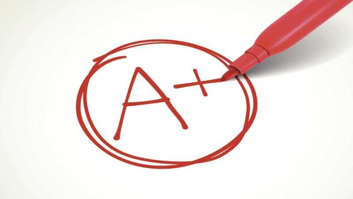
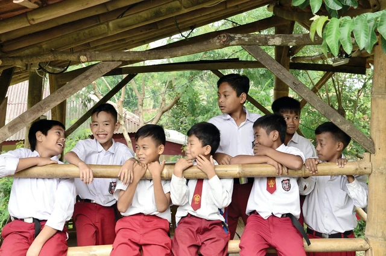
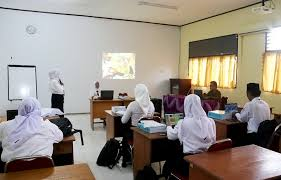
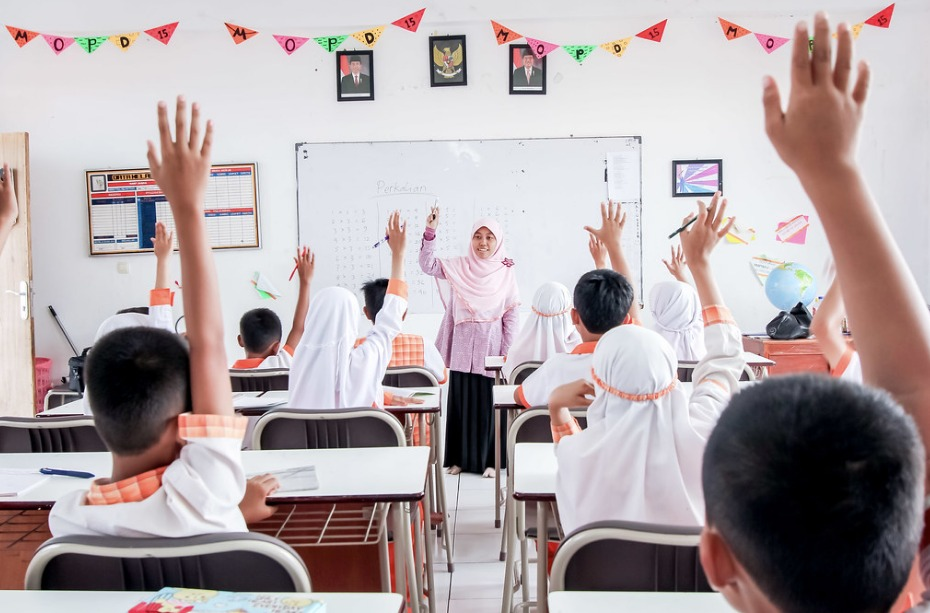
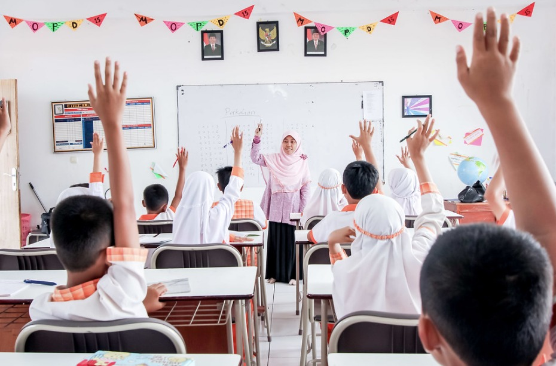

  
Halo warga digital, warga global yang penuh semangat dalam memajukan dunia! Selamat datang di website saya, website pembelajaran mengenai SDGs (Sustainable Development Goals) dan kerjasama internasional, yang hadir dalam tujuan edukatif dan dengan harapan untuk menambah pengetahuan bersama mengenai kondisi global terkini dan keadaan negara kita tercinta Indonesia dalam berkontribusi menyelesaikan masalah global.
Sebagai generasi muda dan sebagai warga negara Indonesia, pengetahuan mengenai keadaan negara adalah suatu hal yang sangat baik loh dalam meningkatkan rasa nasionalisme dengan rasa tanggap yang tumbuh dalam diri kita.
Di website ini, teman-teman dapat mengeksplor hal-hal seperti SDGs secara keseluruhan, SDGs 4 (pendidikan berkualitas) yang tentunya sangat berkaitan dengan teman-teman muda generasi penerus Indonesia, kerjasama bilateral, regional, dan multilateral yang dilakukan oleh Indonesia, dan masih banyak lagi! Yuk bersama menjadi warga negara dan warga dunia yang selalu update mengenai program-program positif yang dibuat demi kemajuan bersama!
Kita masing-masing memiliki tanggung jawab global, dan keputusan, pilihan, dan tindakan kita – segala sesuatu yang kita lakukan dalam kehidupan sehari-hari – harus mendukung tanggung jawab global kita." Province of Manitoba
Berawal pada tahun 1992 pada saat KTT (Konferensi Tingkat Tinggi) Bumi di Rio de Jainero, Brazil dimana 178 negara menyepakati agenda yang berisi mengenai rencana aksi komprehensif pembangunan kemitraan global untuk mendukung pembangunan yang berkelanjutan dalam usaha meningkatkan kualitas kehidupan manusia dan menjaga lingkungan, rencana ini dimatangkan lagi pada tanggal 25 September 2015 di Markas Besar Perserikatan Bangsa-Bangsa (PBB), dimana para pemimpin-pemimpin dunia mengesahkan sebuah agenda tujuan berkelanjutan (SDGs) yang merupakan kesepakatan pembangunan global, pada saat itu 193 kepala negara turut menghadiri pertemuan tersebut, termasuk Wakil Presiden Indonesia pada saat itu, Jusuf Kalla.
Kesepakatan pembangunan baru yang mendorong perubahan secara berkelanjutan yang didasari oleh hak asasi manusia (HAM) dan kesetaraan dalam pembangunan di bidang ekonomi, sosial, dan lingkungan hidup. Tema utama dalam SDGs ini adalah “Mengubah Dunita Kita: Agenda 2030 untuk Pembangunan Berkelanjutan” SDGs dijalankan dengan dasar prinsip-prinsip universal, inklusif, dan integrasi yang meyakinkan bahwa tidak ada orang yang terlewatkan. SDGs sendiri terdiri dari 17 tujuan utama dan 169 target-target detail dan merupakan kelanjutan dari Millenium Development Goals (MDGs) yang telah berakhir pada tahun 2015 lalu.


 
